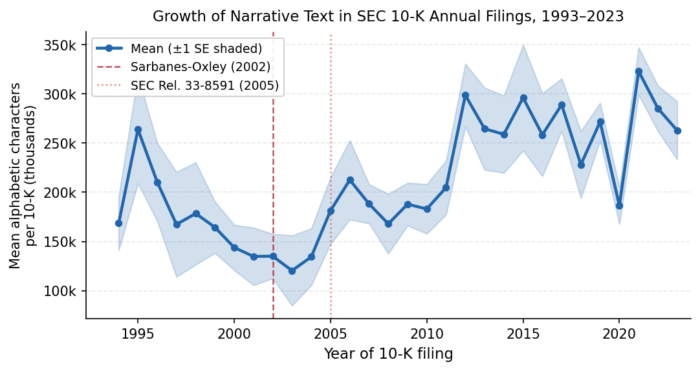

How words in filings, calls, and headlines become numbers you can trade — and how LLMs change that.
Juan F. Imbet · Paris Dauphine – PSL University
Summer school · math one click away — press m or click ⚙ "Under the hood"
Roadmap
Where this lecture is going
AI, jobs, and tasks — the task-based lens on what LLMs actually do to finance careers.
A brief history — dictionaries → topic models → embeddings → transformers.
Why text matters — the EDGAR explosion and why signals survive efficient markets.
Classical toolkit — BoW, TF-IDF, their strengths and blind spots.
Word embeddings — meaning as geometry; Word2Vec, GloVe, finance domain.
RNNs, attention, and LLM families — from sequential state to parallel self-attention.
APIs and limitations — querying models in Python; hallucinations and regulation.
the bigger picture
The whole course is one question: what is the best way to turn a document into a
number that predicts a return? We start with word-counting and build toward LLMs
that reason about the text.
00
AI, jobs, and tasks
LLMs affect tasks within jobs, not jobs wholesale — and that distinction is everything.
The framework
Automation acts task by task, not job by job
A job is a bundle of tasks. AI substitutes some tasks, complements others — and which tasks determines everything.
The theory
Autor, Levy & Murnane (2003): routine tasks are susceptible to automation; non-routine cognitive tasks are not
Acemoglu & Restrepo (2019): automation displaces labour from exposed tasks while creating demand for new complementary tasks
Hampole et al. (2025): one-SD increase in task-level AI exposure → modest aggregate decline in relative labour demand, concentrated among workers with near-complete exposure
The key insight
Felten, Raj & Seamans (2021): high-skill, high-wage white-collar occupations — including finance — have the greatest AI exposure
This does not mean most at risk: it means greatest productivity amplification
Workers who can reallocate toward judgment, synthesis, and relationship tasks are insulated
Finance professionals
High AI exposure creates compound advantage — if you reallocate
Tools that compress low-value tasks free capacity for high-value ones where human judgment dominates.
High AI exposure — AI substitutes
Cleaning and retrieving public data
Formatting references and boilerplate disclosures
First-pass data visualisations
Drafting referee reports from margin notes
Low AI exposure — human advantage
Formulating novel research hypotheses
Mentoring and tailored feedback
Synthesising divergent empirical presentations
Negotiating with portfolio company management
three concrete examples
An equity analyst who screens calls with AI can cover twice as many companies. A compliance officer whose AI flags violations can focus on genuine ambiguity. A quant who uses AI for first-draft code iterates on model design — not syntax.
01
A brief history of textual analysis in finance
From hand-coded dictionaries to neural methods — each generation fixed the failure of the one before.
The founding moment
Tetlock (2007): the news has a mood, and the mood has a price
A simple experiment: measure how negative the Wall Street Journal's
daily market column sounds, then ask whether tomorrow's market moves with it.
The setup (1984–1999)
Daily share of negative words in the WSJ "Abreast of the Market" column
Next-day Dow Jones Industrial Average return
Dictionary: Harvard IV-4 (General Inquirer, 1966) — ~11,000 word stems
the bigger picture
Human language can be turned into a quantitative, return-predicting signal. The
reversal is the tell: this is sentiment temporarily moving prices, not fresh fundamental news.
Counting words, carefully
Why a finance dictionary beat a general-English one
The old way: General Inquirer (Stone et al., 1966)
~11,000 word stems sorted into Positive, Negative, Strong, Weak…
Score a document by counting words per bucket
Transparent, reproducible — but blunt
Li (2008): Fog Index applied to annual reports — harder to read filings predict lower future earnings
The fix: Loughran–McDonald (2011)
tax, liability, depreciation look "negative" to a general dictionary — but they're just finance vocabulary
LM hand-coded sentiment from actual 10-K filings; six categories: Negative, Positive, Uncertainty, Litigious, Strong Modal, Weak Modal
Substantially better at predicting filing-date abnormal returns
the catch with every dictionary
It can't read order. "Earnings did not decline" counts the same as "Earnings did decline"
unless someone hard-codes the negation.
The statistical turn
Topic models: letting the data discover its own structure
By the mid-2000s NLP moved beyond dictionaries to methods that learn structure from the data — no hand-coding required.
Latent Dirichlet Allocation (Blei, Ng & Jordan, 2003)
Each document is a mixture of a small number of latent topics; each topic is a probability distribution over vocabulary words.
Topics are discovered from the corpus — not pre-specified — using Bayesian inference on unlabelled data.
Boudoukh et al. (2013): LDA on firm-level news identified which stories actually move stock prices
Hansen, McMahon & Prat (2018): LDA on FOMC transcripts revealed deliberation structure — who is hawkish, who is dovish — invisible to word-counting
still bag-of-words
LDA discovers topics but still treats documents as unordered word counts. Negation, syntax, and long-range context remain invisible.
02
Why text matters in finance
Where the words come from — and why a profitable signal can hide in plain sight.
The raw material is exploding
10-K filings have grown longer every decade since 1993
More text means more signal — but also more work for any human reader. That gap is where NLP tools earn their keep.

Figure. Mean alphabetic character count per 10-K filing, 1993–2023 (sample of 25 per year; band = ±1 SE).
Vertical lines mark the Sarbanes-Oxley Act (2002) and SEC Release 33-8591 (2005), which mandated a standalone risk-factors section.
The textual share of filings has risen steadily even as financial statements stayed roughly constant in size.
Source: SEC EDGAR full-text index; author calculations. See Loughran & McDonald (2020).
the bigger picture
As AI-generated text gets cheaper to produce, the volume of financial disclosure is likely to keep rising — reinforcing the case for AI-based tools to read it.
The raw material
Six places financial language lives
Earnings calls — scripted talk + spontaneous Q&A; the Q&A leaks the most (Davis et al., 2015)
10-K / 10-Q filings — risk factors, MD&A; up to 200 pages; the Loughran–McDonald (2011) data
Newswire — fast, narrow window; value is in speed and breadth
Analyst reports — dense; complexity rises with information asymmetry (Lehavy et al., 2011)
Central-bank comms — FOMC statements move rates on release (Hansen et al., 2018)
Social media — high-frequency, noisy; Bollen et al. (2011) showed Twitter mood predicts DJIA, but the finding is contested
why this matters
Each source trades off signal richness against speed and cost to process.
That trade-off is exactly where technology — and this course — creates an edge.
The puzzle
If markets are efficient, why does news tone predict returns?
Efficient-markets theory (Fama, 1970) says prices already reflect public information. Yet the data keeps
finding that text predicts returns. Three reconciling reasons:
Processing costs & limited attention. A 200-page 10-K is expensive to read.
Not everyone does — so signals persist until the technology to read at scale spreads.
Soft information & disagreement. Is a cautious tone genuine worry, or
expectation management? When readers disagree, price reflects the average belief, not the sharpest one.
Latent information. Regulation limits explicit selective disclosure (Reg FD), so meaning
leaks through word choice, omissions, and rhetorical structure.
the bigger picture
Text adds value not because markets are irrational, but because extracting information from text
is genuinely costly. Whoever lowers that cost captures the signal.
Four facts any theory must explain
The stylised facts of text-and-returns
Negative tone → negative short-run returns, then reversal.Tetlock (2007).
Finance dictionaries beat general ones.Loughran–McDonald (2011).
Call tone predicts future earnings surprises and deception.Larcker & Zakolyukina (2012): deceptive speech has distinct linguistic markers.
LLM-based signals add fresh predictive power.Lopez-Lira & Tang (2023): ChatGPT headline sentiment predicts next-day returns.
Absent in GPT-1 and BERT — an emergent property of scale.
Making it precise
A "textual signal," defined once and used all course
Strip away the jargon: a text signal is just a recipe that turns a document into numbers.
In plain words
A function that reads document \(d_t\) at time \(t\) and outputs a value \(s_t\) — a sentiment score,
a topic mix, an embedding, a class label.
the whole course in one line
We are searching for the best \(f\): word counts → topic models → transformer embeddings → LLMs as reasoning agents.
The hard part
Four ways a "signal" can fool you
Reverse causality — the document reacts to past returns, not the future
Confounding — macro conditions drive both tone and returns
Multiple testing — NLP spits out thousands of candidate signals; some win by luck
Misspecification — your choice of \(f\) is itself an assumption
the discipline
Use known release times for clean event studies, and a strict out-of-sample split
(train pre-2010, test post-2010) so you don't mistake luck for skill.
03
The classic toolkit: counting words
Bag-of-words and TF-IDF — simple, fast, surprisingly strong, and fundamentally blind to order.
Step zero
Cleaning text before you can count it
Every method starts by standardising raw text into a tidy vocabulary.
Case folding — "Revenue" = "revenue"
Stop-word removal — drop "the", "and", "of"… (100–300 words)
Vocabulary truncation — keep the common types, discard the rare ones
a peek ahead
LLMs skip most of this. They use sub-word tokens — "earnings" → ["earn", "ings"] — so even
rare words are built from frequent pieces. Nothing is thrown away.
The workhorse
Bag-of-words: a document as a pile of word counts
Tip every document into a bag, count each word, forget the order. Crude — but a strong baseline.
Why it works
Simple, interpretable
Sparse → cheap to store
Competitive baseline on many tasks
the fatal flaw
"The fund outperformed the market" and "The market outperformed the fund" have identical
bags — opposite meanings.
The hidden geometry problem
To a computer, "revenue" and "income" are total strangers
When every word is its own dimension, no two distinct words share any similarity —
"revenue" is as far from "income" as it is from "penguin."
the bigger picture
This single defect is what word embeddings exist to fix: replace "all-or-nothing" similarity with a
continuous space where related words sit close together.
A smarter count
TF-IDF: rare words carry more signal
Raw counts are dominated by common words. TF-IDF up-weights words that are frequent in
this document but rare across the corpus — the ones that actually distinguish it.
A word in every document → IDF = 0 (says nothing distinctive)
A word in one document → maximal weight (highly distinctive)
Cosine similarity on TF-IDF vectors is length-invariant — the vector space model (Salton et al., 1975)
No synonyms — revenue and sales score zero similarity if they never co-occur
Fixed vocabulary — new acronyms and names are simply dropped
Huge & sparse — tens of thousands of dimensions, mostly zeros
the move that follows
Replace the discrete one-word-one-dimension basis with a continuous embedding space — the
idea behind everything from Word2Vec to GPT.
04
Word embeddings: meaning as geometry
Give every word a location in space, and similarity becomes distance you can compute.
The founding idea
"You shall know a word by the company it keeps"
the distributional hypothesis · Firth, 1957
Words that mean similar things show up in similar contexts. So if you can capture which words
appear near which, you capture meaning — without anyone hand-labelling a thing.
An embedding maps each word to a point in a few-hundred-dimensional space where
direction and distance encode meaning.
How the geometry gets learned · Word2Vec
Predict the neighbours, and meaning falls out
Train a model to guess the words surrounding a target word. To do that well it's
forced to place related words near each other. That arrangement is the embedding.
GloVe: the global picture
Factorising co-occurrence counts instead of streaming windows
Word2Vec processes one window at a time; GloVe counts all co-occurrences across the entire corpus first, then fits the geometry in one pass.
Key insight: the ratio of co-occurrence probabilities \(P_{ik}/P_{jk}\) encodes relational meaning more faithfully than raw probabilities
Minimise a weighted squared loss between the dot product of word vectors and \(\log X_{ij}\)
Train from scratch on a financial corpus (e.g. BloombergGPT, FinancialPhraseBank embeddings)
Fine-tune a general model (FinBERT: BERT re-trained on news, 10-Ks, calls)
Retrofit — nudge synonyms together / antonyms apart using a financial lexicon
The geometry at work · PCA case study
king − man + woman ≈ queen: the analogy is visible in 2D
Load pre-trained GloVe (300d), compute the analogy in full vector space, then project to 2D with PCA — the arithmetic lands next to queen (cosine similarity 0.67).
Figure. The classic analogy \(\hat{\mathbf{v}}_{\text{king}} - \hat{\mathbf{v}}_{\text{man}} + \hat{\mathbf{v}}_{\text{woman}} \approx \hat{\mathbf{v}}_{\text{queen}}\),
computed from real pre-trained GloVe-300 vectors (glove-wiki-gigaword-300) and projected to two dimensions by PCA.
The orange arrow is the vector arithmetic; the dotted line shows the result landing next to queen.
Source: author calculations using gensim + GloVe-300; generated deterministically by gen_king_analogy.py.
05
Recurrent networks and the vanishing gradient
Order finally matters — but reading 500 tokens by hand has a flaw the LSTM was built to fix.
Sequential reading
RNNs: the first architecture to process a document left to right
Each token folds into a running hidden state — a summary of everything read so far. But carrying that summary across 500 tokens breaks.
The final state \(\mathbf{h}_T\) feeds a task head — a sentiment classifier, an LM head.
vanishing gradient
Propagating error back \(T\) steps multiplies \(T\) Jacobians.
A factor of 0.95 per step → \(0.95^{500} \approx 5 \times 10^{-12}\).
The opening paragraph is numerically gone before training can use it.
The fix
LSTM: a cell state that can carry information across long lags
Instead of repeatedly multiplying the hidden state, the LSTM cell state is updated additively — gradients flow like water through an open pipe.
Hochreiter & Schmidhuber (1997): Long Short-Term Memory adds a cell state \(\mathbf{c}_t\) updated via learned gates
Forget gate: what fraction of the old cell to erase
Input gate: what new information to write into the cell
Output gate: what the cell exposes as the hidden state \(\mathbf{h}_t\)
When the forget gate stays open, the cell state behaves like a near-lossless gradient highway
LSTMs in finance
State-of-the-art on Financial PhraseBank (Malo et al., 2014) and FiQA (Maia et al., 2018) sentiment benchmarks through the mid-2010s — before attention displaced them.
06
Scaled dot-product attention and the Transformer
Every token attends to every other token — in parallel, with no distance decay.
Attention as content-based lookup
Instead of a sequential state, every token looks at every other token
Each token asks a question (query), every token posts an answer (key + value); the update is a weighted average of all values, weighted by how well the query matches each key.
Two advantages over the RNN
Runs in parallel across the sequence — critical for GPU-scale training
Gradient flows directly between any two positions — no exponential decay with distance
Bahdanau, Cho & Bengio (2015): the original attention mechanism for sequence-to-sequence MT.
Vaswani et al. (2017): generalised to the Transformer, which discards recurrence entirely.
Multi-head attention
Several attention patterns in parallel, each specialising
A single attention head can track only one kind of relationship. Multi-head attention runs several in parallel on lower-dimensional projections.
In financial text: one head may follow temporal links (prior quarter vs. current quarter), another entity coreference (the company, it, JPMorgan), another negation scope (did not, failed to)
BERT (Devlin et al., 2019): 12-layer Transformer encoder pre-trained with Masked LM (15% of tokens masked); bidirectionality makes it exceptional for classification
FinBERT (Yang et al., 2020): BERT further pre-trained on Reuters news, 10-K filings, and earnings calls — achieves state-of-the-art sentiment on Financial PhraseBank
interpretability bonus
Attention weights expose which parts of a document a prediction rests on — letting an analyst see when a model keys on forward-looking guidance or a specific risk-factor disclosure.
07
A taxonomy of modern LLM families
Two design axes — training objective and domain — determine which model to reach for.
Three training objectives
How a model is trained determines what it's good at
Objective
Architecture
Models
Best for
Autoregressive (next token)
Decoder-only
GPT-1/2/3, GPT-4
Generation, Q&A, summarisation
Masked LM (fill the blank)
Encoder-only
BERT, FinBERT
Classification, extraction, NER
Sequence-to-sequence
Encoder-decoder
T5 (Raffel et al., 2020)
Multi-task: summarise + classify + extract
note on FinBERT
Two models share the name: Araci (2019) fine-tuned BERT on financial text; Yang et al. (2020) retrained BERT from scratch on financial corpora. They are distinct.
Open-weight and finance-domain
LLaMA, BloombergGPT, FinGPT — and why data sovereignty matters
Routing proprietary trading data through a third-party API is a compliance problem. Open-weight models run on your servers.
LLaMA (Touvron et al., 2023)
7B–65B parameters; freely downloadable; LLaMA-2/3 extend context to 128K tokens — handles most filings in one pass.
BloombergGPT (Wu et al., 2023)
50B params; trained on 363B-token financial corpus + 345B general; outperforms same-size general models on ConvFinQA, FiQA-SA, FPB.
FinGPT (Yang et al., 2023)
LoRA fine-tuning of a 7B general model on financial data matches much larger domain-pretrained models — a cost-effective path for academic researchers.
model selection heuristics
(1) Task type: classification → encoder; generation → decoder. (2) Data sensitivity: proprietary → open-weight. (3) Latency: 7B–13B real-time on one A100; 70B+ needs multi-GPU.
08
Querying LLMs via Python APIs
OpenAI, Anthropic, and HuggingFace — the three gateways to LLMs in any financial NLP pipeline.
The three gateways
A sentiment query in ten lines of Python
All three APIs share the same structure: a list of role-tagged messages in, a structured response out.
import openai
client = openai.OpenAI()
resp = client.chat.completions.create(
model="gpt-4o-mini",
messages=[
{"role": "system",
"content": "You are a financial analyst."},
{"role": "user",
"content": "Sentiment of 'Revenue fell 12%.'?"
" One word."},
])
# -> 'Negative'
Anthropic API: identical request shape to OpenAI; anthropic.Anthropic(), client.messages.create().
Economics of inference
Token costs and latency determine the right model for each task
Model
Input $/M tok
Output $/M tok
Tokens/s
gpt-4o
2.50
10.00
60
gpt-4o-mini
0.15
0.60
120
claude-sonnet
3.00
15.00
80
claude-haiku
0.25
1.25
200
LLaMA-3 70B (on-prem)
—
—
45
Illustrative 2024 list prices; verify current rates before production deployment.
the cost maths
Classifying 1M headlines at 100 tokens: ~$250 with a frontier model, ~$15 with a lightweight alternative.
Chain-of-thought (Wei et al., 2022) improves multi-step accuracy but substantially increases output tokens — cost-effective only when accuracy gains justify the expense.
09
Limitations and the regulatory landscape
LLMs are powerful but imperfect — know the failure modes before deploying in production.
The main failure mode
LLMs can confidently fabricate financial facts
An LLM hallucination is an output that is fluent and coherent but factually incorrect, unverifiable, or unsupported by the input context.
Three types in finance
Factual — fabricated stock price, revenue, or regulation number
Attribution — correct fact ascribed to the wrong company or period
Reasoning — plausible-sounding but logically wrong valuation chain
Mitigation strategies
RAG: provide source doc as context; instruct "answer only from provided text"
Citation enforcement: require page and sentence for every numerical claim
Consistency sampling: generate ≥5 responses; flag high-variance claims
data contamination (Didisheim et al., 2025)
LLMs carry memorised knowledge of historical asset returns into zero-shot forecasting — out-of-sample tests may be invalid if the model trained on the very time series it predicts.
Practical constraints
Long documents challenge even 128K-token context windows
Most standard filings fit in modern context windows — but very long documents still require chunking, and placement of relevant facts matters.
Document
Tokens (approx)
Earnings press release
800
Earnings call transcript
6,000
10-Q filing
35,000
10-K filing
70,000
Proxy statement
120,000
Basel III Pillar 3
250,000
"lost in the middle" (Liu et al., 2023)
Retrieval accuracy degrades for information placed in the middle of long contexts — even when the document fits in the window, where relevant facts appear matters.
Recency bias: large, liquid firms dominate training corpora — small-cap analysis may be less reliable
Sentiment framing: models reproduce media framing effects, amplifying narratives rather than extracting fundamentals
Regulatory landscape
Disclosure obligations are real — EU AI Act (2024) and SEC (2023)
Deploying an LLM in a client-facing or regulatory context is not just a technical decision — it carries legal obligations.
EU AI Act (2024)
Four risk tiers. General-purpose LLM APIs must disclose AI system use and cannot deceive users about artificial origin.
High-risk applications (credit scoring, underwriting) face conformity assessment, data governance, and human oversight requirements.
SEC 2023 Guidance
Investment advisers using LLMs in investor interactions must eliminate or neutralise conflicts of interest.
LLM outputs that influence investment decisions are subject to the same fiduciary duty standards as human advisor recommendations.
the bottom line
Ignoring either the technical failure modes or the regulatory framework creates material operational, reputational, and legal risk.
Wrap-up
What we covered — and where Lecture 2 goes
Today
AI amplifies finance professionals via the task-based lens
Timeline, worked TF-IDF example, and PCA case study notes. Beyond the core lecture.
Appendix · context
From dictionaries to neural methods — a timeline
Year
Method
Key advance
1957
Distributional hypothesis (Firth)
Meaning from context
1966
General Inquirer
Systematic word counting
1975
Vector space model (Salton)
Cosine similarity for retrieval
1997
LSTM (Hochreiter & Schmidhuber)
Gated cell state
2003
LDA (Blei, Ng & Jordan)
Data-driven topics, no labels
2007
Tetlock (2007)
Media sentiment → returns
2011
LM dictionary
Finance-domain sentiment
2013
Word2Vec (Mikolov)
Dense embeddings, semantic geometry
2014
GloVe (Pennington)
Global co-occurrence factorisation
2015
Attention (Bahdanau)
Direct token-to-token paths
2017
Transformer (Vaswani)
Parallel self-attention, massive scale
2018–19
BERT / FinBERT
Pre-train, then fine-tune
2020+
GPT-3/4, Claude, Llama
Instruction-following, reasoning
2023
BloombergGPT / FinGPT
Finance-domain scale and LoRA
Each generation fixes the core limitation of the one before it.
Appendix · worked example
TF-IDF on three tiny sentences
Doc
Tokens
\(d_1\)
revenue grew strong earnings
\(d_2\)
earnings declined weak guidance
\(d_3\)
revenue guidance raised strong
Full computation in Practical Session 1.
Appendix · PCA caution
Reading PCA plots of embedding space with care
Project 30 financial terms to 2D via PCA on GloVe vectors and colour by theme — consistent clusters appear, but axes need careful interpretation.
option, futures, derivative → tight cluster
default, credit → together, away from equities
merger, acquisition → nearly identical vectors
Rates (yield, spread, inflation, interest rate) → the most cohesive group
read the axes with care
PCA axes are not automatically interpretable as named financial concepts — they are the directions of greatest variance among the selected terms.
Proximity in 2D is suggestive, not definitive; exact relationships require full-dimensional cosine similarities.